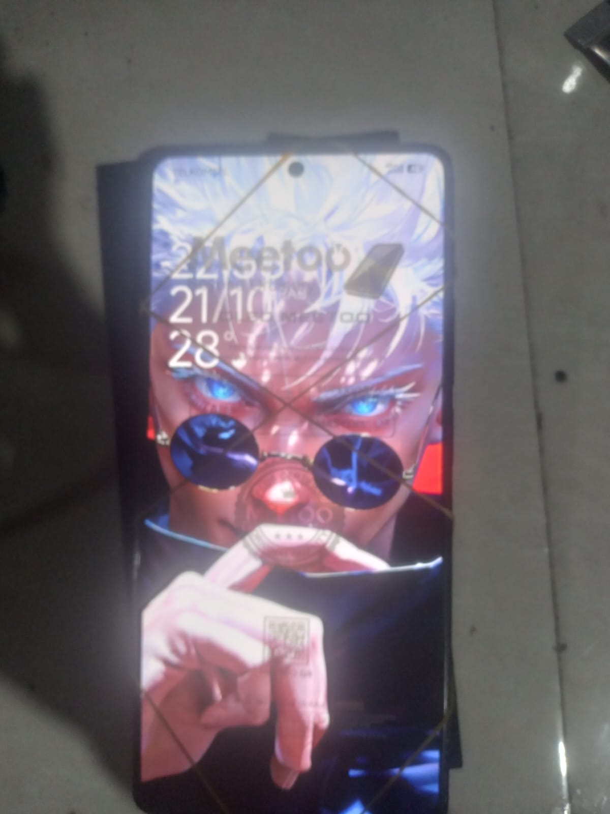

Ada kalanya HP masih menyala, tetapi layarnya sudah tidak bisa diandalkan. Benturan atau tekanan bisa membuat layar retak, bergaris, atau tidak lagi merespons sentuhan dengan baik.
Kali ini kita membahas penggantian layar Redmi Note 13 5G menggunakan panel OLED pengganti. Pekerjaan seperti ini mungkin terlihat seperti bongkar-pasang biasa, tetapi ada beberapa detail kecil yang menentukan kerapian dan hasil akhirnya.
Kondisi Sebelum dan Sesudah Penggantian
Sebelum mulai membongkar, teknisi sebaiknya memeriksa apakah masalah hanya terjadi pada layar atau ada dampak lain setelah benturan. Cek tampilan gambar, respons sentuh, kondisi bodi, dan keluhan lain yang disampaikan pemilik HP.

Tampilan yang kembali menyala tentu melegakan, tetapi itu belum otomatis berarti pekerjaan selesai. Fungsi sentuh, kecerahan, warna, dan kestabilan panel tetap perlu diperiksa.
Kenapa Memilih Panel OLED?
Redmi Note 13 5G menggunakan layar AMOLED dengan refresh rate hingga 120 Hz menurut spesifikasi resminya. OLED dan AMOLED sama-sama memakai piksel yang dapat memancarkan cahaya sendiri, sehingga warna hitam dapat terlihat pekat tanpa lampu latar seperti pada LCD konvensional.
Meski begitu, panel pengganti di pasaran memiliki kualitas dan spesifikasi yang berbeda-beda. Jangan menganggap semua layar berlabel OLED pasti setara dengan panel bawaan.
Hal yang perlu diperiksa sebelum membeli panel
- Kompatibilitas: pastikan panel memang cocok untuk Redmi Note 13 5G, bukan hanya mirip ukuran fisiknya.
- Kualitas gambar: cek warna, ketajaman, dan apakah ada bercak atau garis.
- Respons sentuh: pastikan semua bagian layar dapat merespons sentuhan.
- Kecerahan dan refresh rate: sesuaikan ekspektasi dengan spesifikasi panel pengganti yang benar-benar dibeli.
- Informasi produk: tanyakan apakah panel original, OEM, atau aftermarket sesuai keterangan pemasok.
Tahapan Ganti LCD Redmi Note 13 5G
1. Periksa kondisi awal HP
Nyalakan perangkat dan periksa bagian yang masih bisa diuji. Jika memungkinkan, dokumentasikan kondisi awal agar ada catatan mengenai kerusakan sebelum servis dilakukan.
2. Buka perangkat dengan hati-hati
Gunakan alat pembuka yang sesuai dan hindari mencongkel terlalu dalam. Pemanasan untuk melunakkan perekat harus terkontrol karena panas berlebihan dapat merusak baterai atau komponen lain.
3. Lepaskan konektor baterai sebelum menangani layar
Ikuti panduan servis yang sesuai untuk mengakses konektor. Putuskan koneksi baterai sebelum melepas atau memasang konektor layar untuk mengurangi risiko korsleting.
Jangan menarik kabel fleksibel dari bagian kabelnya. Pegang konektor dengan alat yang tepat dan hindari menekan komponen kecil di sekitarnya.
4. Uji panel sebelum pemasangan permanen
Hubungkan panel sesuai prosedur servis dan lakukan pengujian sebelum memberi perekat permanen. Periksa gambar, warna, respons sentuh, kecerahan, dan fungsi lain yang didukung panel.
Jangan buru-buru memberi lem hanya karena layar sudah menyala. Jika muncul garis, kedipan, atau area sentuh mati, periksa panel dan konektor terlebih dahulu.
5. Bersihkan sisa perekat lama
Bersihkan sisa lem pada frame secara perlahan. Permukaan yang tidak rata dapat membuat panel baru tidak menempel sempurna atau menyisakan celah di pinggir.
Gunakan alat nonlogam dan cairan pembersih yang kompatibel untuk pekerjaan elektronik. Hindari menuangkan cairan berlebihan karena dapat merembes ke bagian dalam perangkat.
Tips Memasang Lem agar Tidak Blepotan
Perekat yang terlalu banyak bisa keluar ke pinggir, sedangkan perekat yang tidak merata dapat membuat layar mudah terangkat. Gunakan perekat khusus pemasangan layar atau frame yang kompatibel dengan desain perangkat.
Kalau lem telanjur keluar ke pinggir
Jangan langsung menggosoknya dengan benda tajam. Periksa jenis perekat, lalu bersihkan sesuai petunjuk produsennya menggunakan alat yang tidak merusak panel atau frame.
Hindari cairan yang belum diketahui keamanannya, terutama di dekat layar dan konektor. Jika lem masuk ke celah yang sulit dijangkau, jangan memaksa menariknya karena tindakan itu bisa menimbulkan kerusakan tambahan.
Memilih warna lem yang sesuai
Untuk frame hitam, perekat hitam yang memang dirancang untuk pemasangan layar dapat membantu menyamarkan sisa lem. Untuk frame berwarna terang, pilih perekat yang direkomendasikan untuk permukaan tersebut.
Warna bukan satu-satunya pertimbangan. Daya rekat, ketebalan, dan kompatibilitas bahan tetap lebih penting daripada sekadar tampilan.
Tips teknisi: aplikasikan perekat secara tipis dan merata sesuai desain frame. Jangan menambah lem untuk menutupi celah yang sebenarnya disebabkan panel tidak pas atau frame berubah bentuk.
Risiko yang Perlu Diwaspadai
Layar menyala, tetapi sentuhan tidak berfungsi
Penyebabnya bisa berupa panel pengganti yang bermasalah, konektor belum terpasang sempurna, atau gangguan pada jalur layar. Periksa konektor dan lakukan pengujian sebelum menyimpulkan bahwa panel harus diganti lagi.
Muncul garis atau kedipan
Masalah bisa berkaitan dengan panel, konektor, atau jalur terkait. Jika muncul setelah pemasangan, jangan merekatkan panel secara permanen sebelum penyebabnya diperiksa.
Panel tidak menempel rata
Sisa perekat, frame bengkok, atau panel yang tidak sesuai dapat menjadi penyebabnya. Jangan memaksa panel menutup karena tekanan berlebihan berisiko merusak layar OLED.
Perlindungan air tidak boleh dijanjikan sembarangan
Setelah perangkat dibuka, kemampuan perlindungan terhadap air dan debu tidak boleh dianggap tetap sama seperti sebelumnya. Perekat baru tidak otomatis mengembalikan perlindungan pabrik, jadi jelaskan keterbatasan ini kepada pelanggan.
Checklist Sebelum HP Diserahkan
- ☐ Tampilan normal, tanpa garis atau bercak yang tidak semestinya.
- ☐ Layar sentuh merespons di seluruh area.
- ☐ Kecerahan dapat dinaikkan dan diturunkan.
- ☐ Warna dan tampilan diperiksa pada beberapa tingkat kecerahan.
- ☐ Konektor terpasang benar dan tidak ada kabel terjepit.
- ☐ Panel rata dan celah di tepi sudah diperiksa.
- ☐ Sisa perekat dibersihkan dengan aman.
- ☐ Semua bagian yang dibuka dipasang kembali dengan benar.
Jika memungkinkan, tunjukkan hasil pengujian kepada pelanggan sebelum perangkat dibawa pulang. Langkah sederhana ini membantu membangun kepercayaan dan mengurangi risiko keluhan setelah servis.
Berapa Biaya Ganti LCD Redmi Note 13 5G?
Biaya penggantian layar bergantung pada jenis panel, kualitas produk, harga pemasok, dan biaya pengerjaan. Panel dengan spesifikasi atau garansi berbeda bisa memiliki harga yang cukup jauh.
Sebelum memberikan estimasi, pastikan panel benar-benar kompatibel dan jelaskan apakah harga sudah termasuk jasa pemasangan. Jika tersedia beberapa pilihan, uraikan perbedaan kualitas serta garansinya dengan jujur.
Servis HP di ZayComCell
Penggantian layar bukan sekadar melepas panel lama lalu memasang yang baru. Ada pemeriksaan, pengujian, pembersihan, pemasangan perekat, dan pengecekan akhir yang semuanya perlu dilakukan dengan teliti.
Kalau Redmi Note 13 5G milik Kamu mengalami layar pecah, bergaris, atau tidak merespons sentuhan, pemeriksaan awal dapat membantu menentukan apakah layar memang perlu diganti atau ada masalah lain yang perlu ditangani.
Dokumentasi servis juga menjadi bagian dari proses belajar dan berbagi informasi agar pemilik perangkat memahami apa yang dikerjakan pada HP mereka.
Catatan teknis: Foto dokumentasi menunjukkan kondisi perangkat, tetapi tidak cukup untuk memastikan merek, tipe, atau kualitas panel pengganti. Spesifikasi dan hasil pengujian perlu disesuaikan dengan komponen yang benar-benar dipasang.